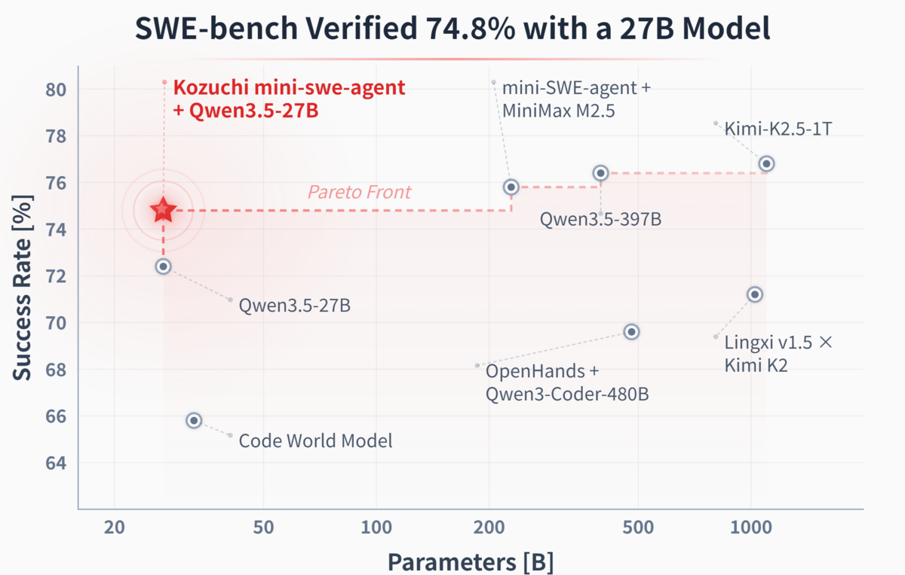
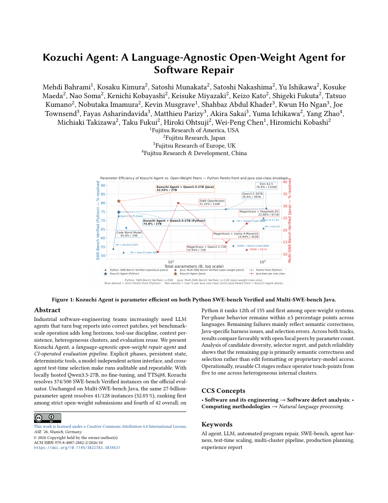
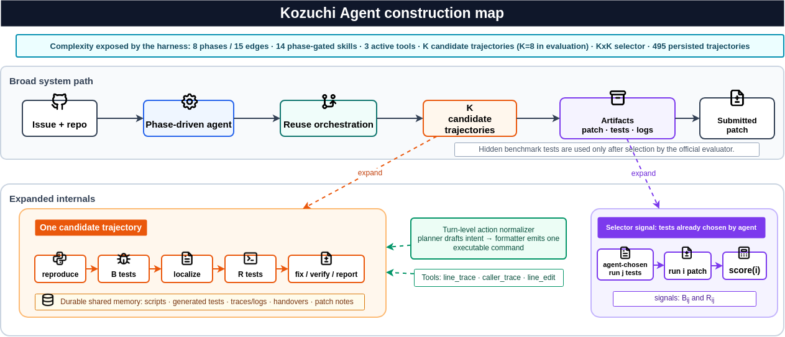
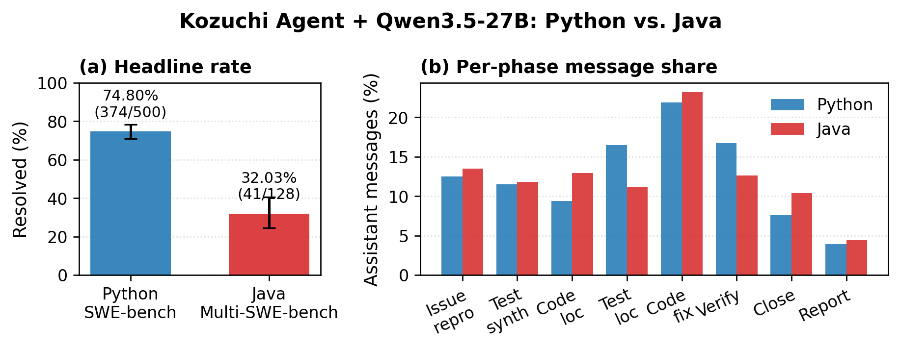
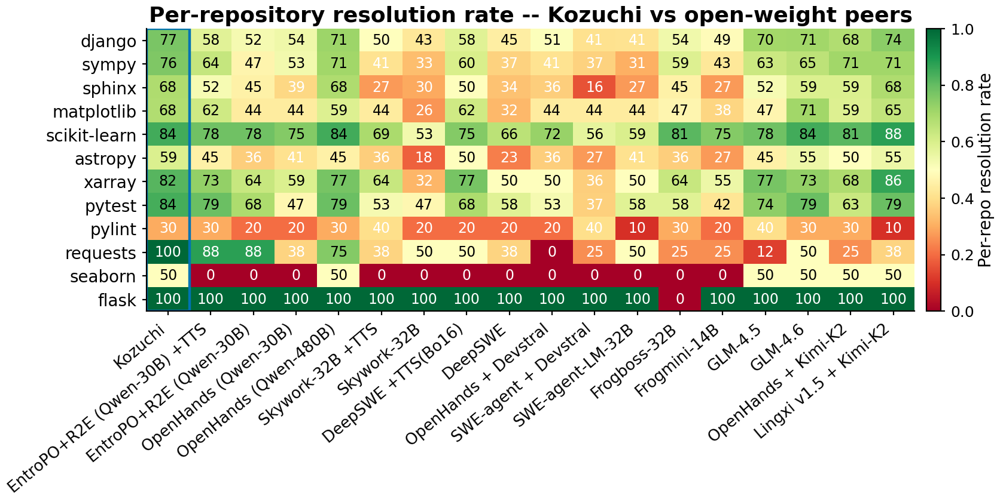
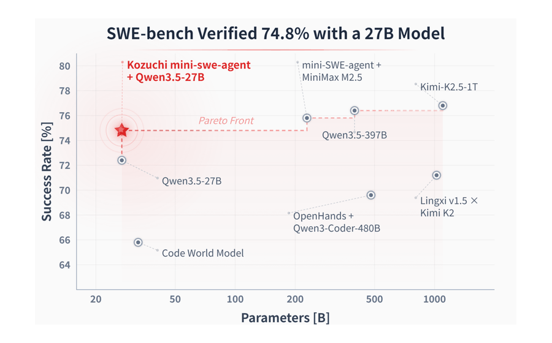

A language-agnostic, open-weight agent for software repair — state-of-the-art parameter efficiency on SWE-bench Verified with a 27B model.
Kozuchi Agent is a phase-driven software-repair agent that pairs a 27B open-weight model (Qwen3.5-27B) with reuse orchestration, K-candidate trajectory sampling, and an agent-internal selector — no closed-source verifier and no hidden-test access at selection time. It resolves 74.80% of SWE-bench Verified and transfers to Java (32.03% on Multi-SWE-bench) without language-specific changes.

figures/

paper/build.sh compiles the PDF offline with bundled ACM class files.INDEX.md; every reference is annotated in REFERENCES_INDEX.md.Industrial software-engineering teams increasingly prefer LLM agents that turn bug reports into correct, test-passing patches — but operating such agents at industrial scale raises harness-level problems: long horizons, tool-use discipline, context persistence, multi-cluster execution, and evaluation reuse. Kozuchi Agent answers with a language-agnostic open-weight agent and a CI-operated evaluation pipeline built on five pillars:

figures/The same harness transfers from Python to Java unchanged: per-phase scaffold behavior matches the Python run within ±5 percentage points on every phase, and the remaining failures are dominated by semantic correctness, Java-specific harness failures, and selection errors — not proprietary-model advantages.


The artifact is self-contained: every numeric value, figure, and table in the paper is regenerable from files inside the repository, and INDEX.md maps each claim to its script, its paper section, and its regenerated output.
$ git clone https://github.com/marscod/kozuchi-agent-artifact $ cd kozuchi-agent-artifact $ ./reproduce.sh # every paper number + figure (stats/, figures/, plots/) $ ./reproduce.sh --paper # also rebuild paper/main.pdf $ ./decompress.sh # optional: restore 22 GB of raw trajectories from data/archives/
Requirements: Python 3.10+ (scripts/numbers/ needs no third-party
packages); matplotlib pandas seaborn numpy openpyxl for figures
(auto-handled via uv when available); TeX Live only for
--paper.
data/archives/.
Every card opens the corresponding folder or file in the repository.
INDEX.mdOne row per paper number: claim ↔ script ↔ section ↔ regenerated output. A reviewer checklist.
↗notebooks/reproduce.htmlFully rendered narrative walkthrough of every paper number — no Jupyter required.
↗scripts/Every reproduction script: paper numbers, figures, RQ1–RQ6 analyses, and the standalone RQ6 cross-track bundle.
↗data/Configs, per-instance trajectory bundles, Python & Java evaluation directories, redacted operational metadata.
↗REFERENCES_INDEX.mdAnnotated bibliography: every cite key, its URL, and why the paper uses it.
↗paper/LaTeX sources, figures, stats fragments, and a one-command offline PDF build.
If you build on this artifact, please cite the paper (citation will be updated upon publication):
Headline Pareto frontier, construction map, cross-language transfer, peer heatmap, and the paper itself.

{kind=link}
{kind=link}
{kind=link}
{kind=link}